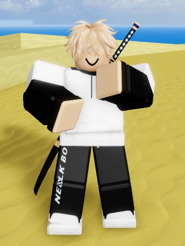
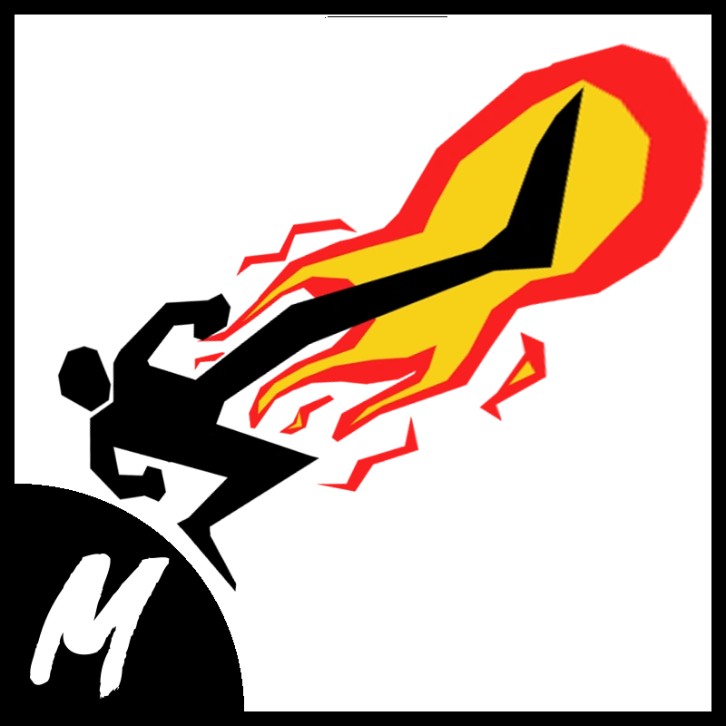
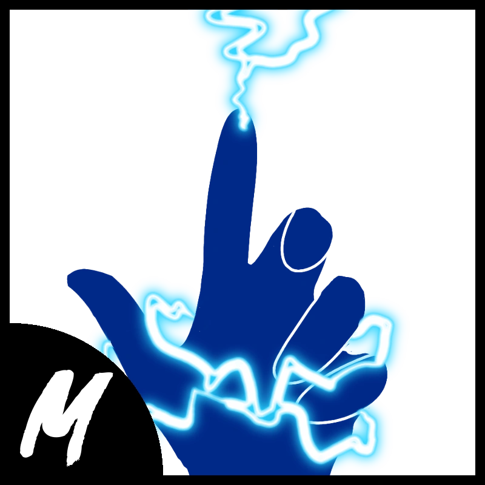
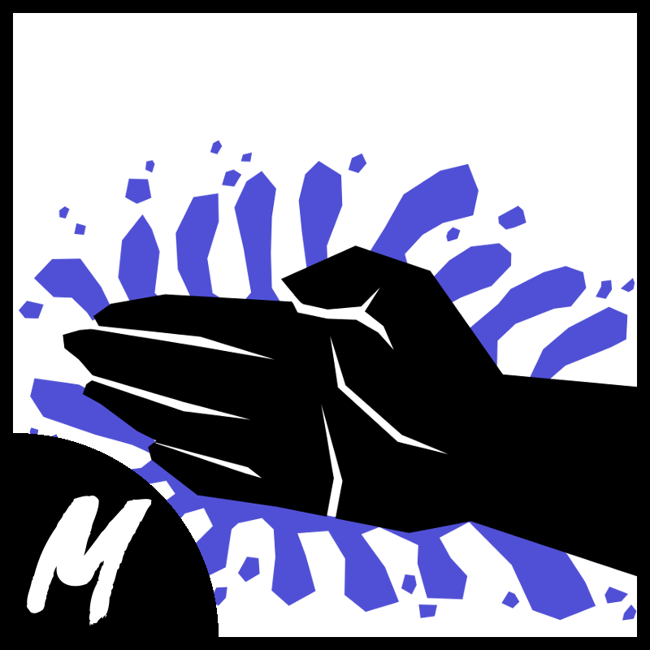
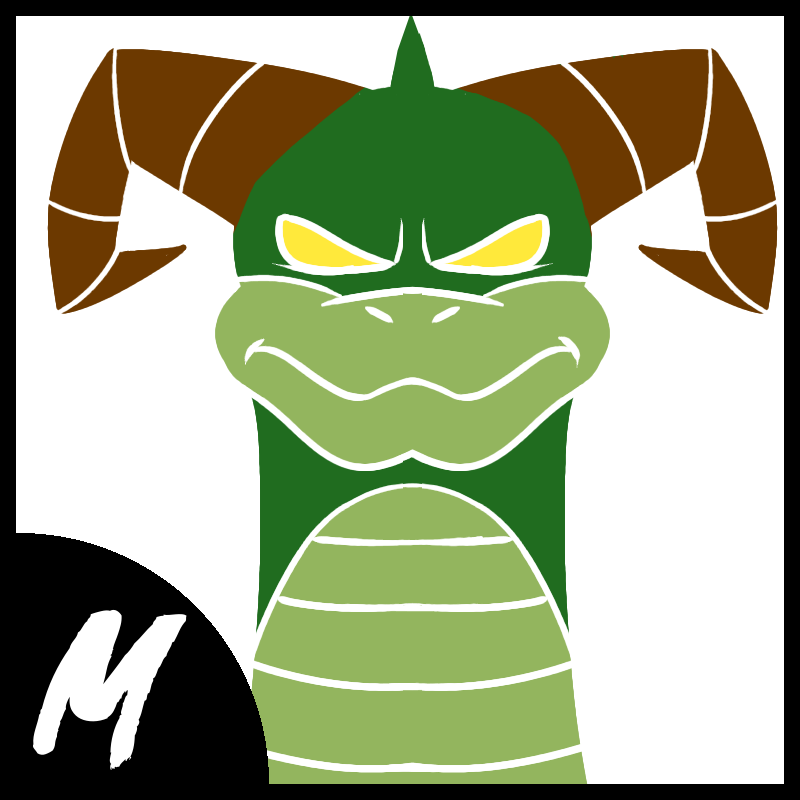
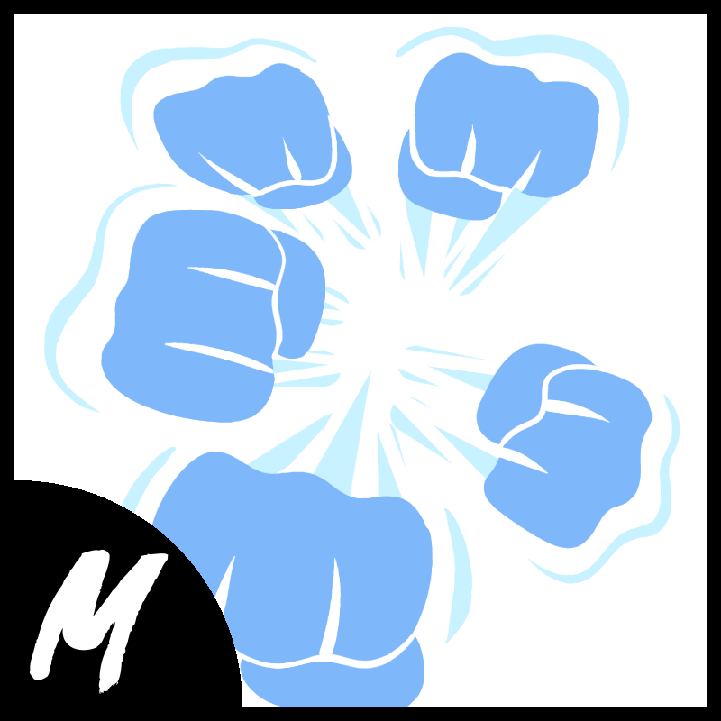
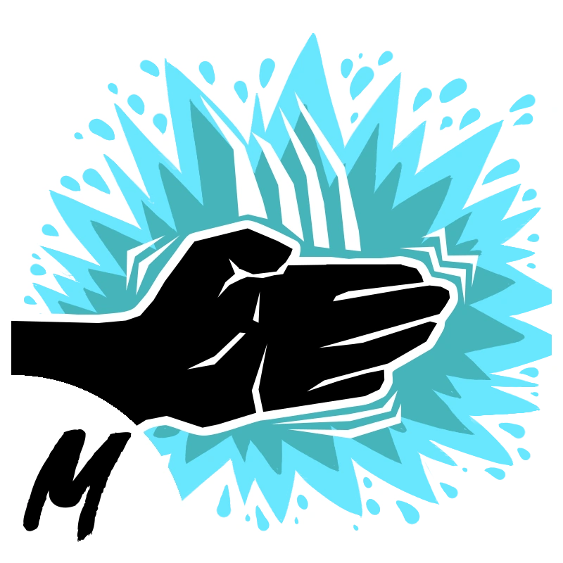
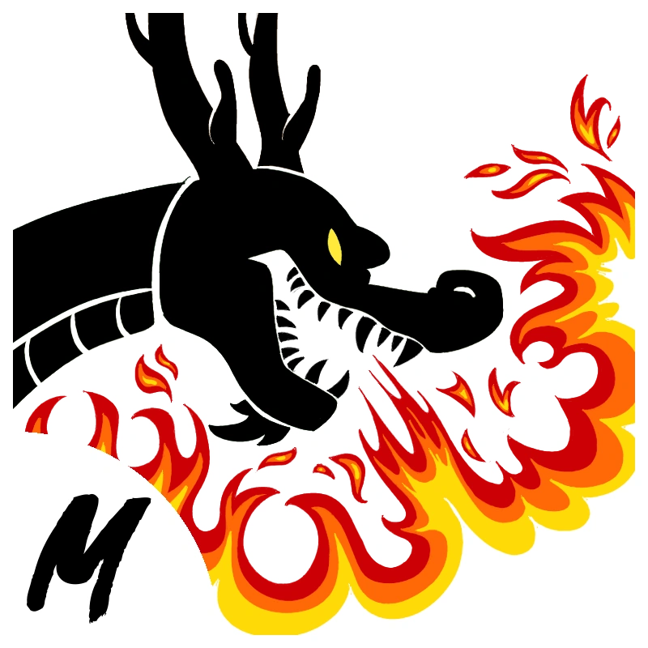
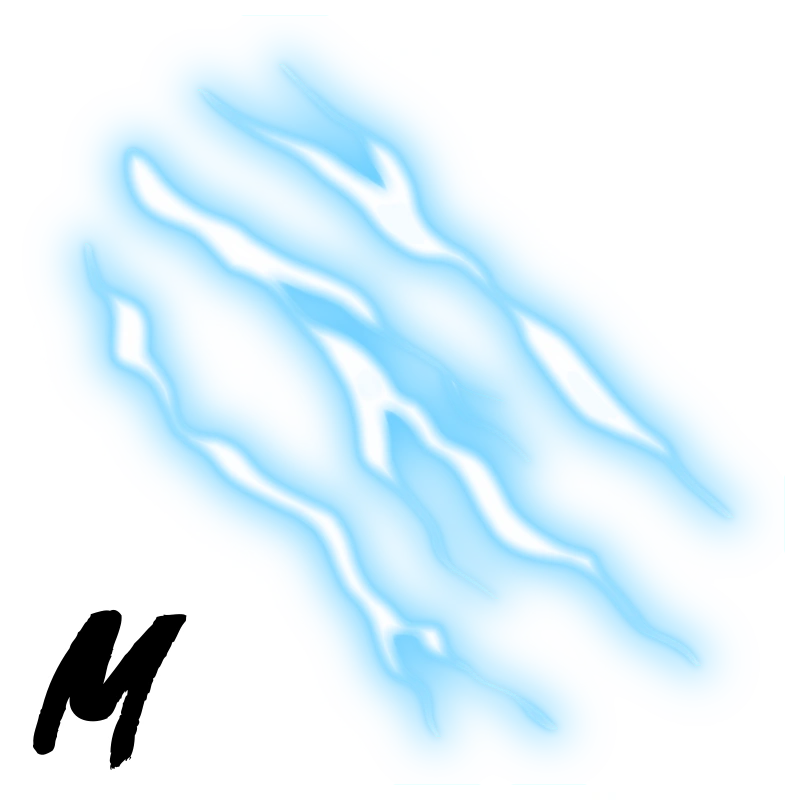
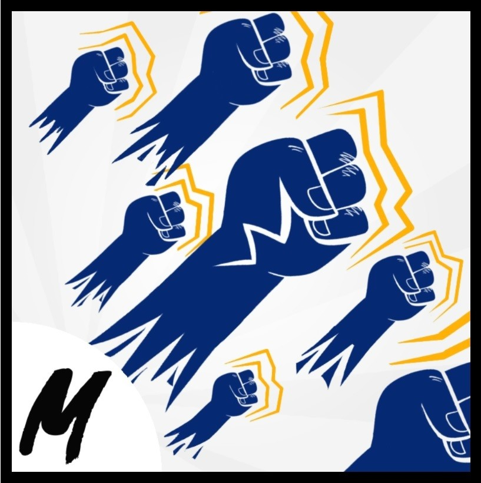

estilos de luta do sea 1
Combat: Vamos começar com estilo de luta inicial que é o combat,ele é o primeiro estilo de luta que você consegue quando entra no jogo. Ele não é um dos melhores estilos de luta, mas pra quem ta iniciando no jogo ele ajuda um pouco. Mas depois que você conseguir juntar 150.000 de belly você ja pode comprar o próximo estilo de luta.
Dark step: O Passo Sombrio ou Dark Step é um estilo de luta baseado em pernas de fogo que pode ser adquirido com o Dark Step Teacher no (Sea 1 - Vila Pirata) (Sea 2 - Quente e Frio) Sea 3 (Castelo Do mar) Respectivamente, por $150,000.
Electric: Electric pode ser comprado no primeiro mar , no primeiro nível das Skylands do Mad Scientist por $500.000.O Cientista Louco está se escondendo atrás de uma das rochas no fundo das Skylands . Eles se assemelham a um "Tigre Humanoide" ou "Híbrido Humano-Tigre"
kung fu: Water Kung Fu pode ser comprado com MoneyIcon750.000 no Water Kung Fu Teacher , que pode ser encontrado na Underwater City no First Sea , no lado quente de Hot e Cold no Second Sea , e no Castle on the Sea perto dos portais .
estilos de luta do sea 2
Dragon Breath: ensinado por Sabi no Reino da Rosa a um custo de 1.500 frag.
.webp)
Death Step: Death Step é um estilo de luta necessário para obter o estilo de luta Godhuman . Um dos requisitos é ter Death Step na maestria 400 ou superior. Você precisa de: 5.000 de frag, 2.500.000 de belly, 400 de maestria no Dark Step ou superior e a Library Key.
Superhuman:Onde obter: No Segundo Mar, na Snow Mountain (Montanha da Neve) com o NPC Martial Arts Master (Mestre das Artes Marciais). Requisitos: 300 de maestria nos estilos de luta Electric, Dark Step, Water Kung Fu e Dragon Breath.
Sharkman karate:Ele pode ser comprado de Daigrock, o Sharkman , após dar a ele uma Water Key , que você pode obter matando Tide Keeper , e tendo Water Kung Fu em 400 mastery, 2.500.000 de belly e 5.000 de frag.
estilos de luta do sea 3
Dragon Talon:Dragon Talon é um estilo de luta que foi lançado no Update 16 , e pode ser aprendido com o Uzoth NPC . Ele serve como uma atualização para seu antecessor, Dragon Breath , ambos com movimentos de dragão.Os requisitos Pelo menos 400 de maestria em Dragon Breath,3.000.000 de belly,5.000 de frag e Deu a Uzoth a Essência do Fogo .
Electric Claw:Electric Claw é um estilo de luta que serve como uma evolução para seu antecessor, Electric . É usado principalmente para moagem e PvP devido à sua rápida velocidade M1 e habilidades poderosas e fáceis de acertar. É obtido no Terceiro Mar. Requisitos:Consiga 400 de maestria no estilo de luta elétrico . Encontre o NPC , Herói Anterior , localizado próximo ao Chefe Longma sob os muitos arcos da Tartaruga Flutuante no Terceiro Mar. Fale com ele e faça sua missão que exige que você chegue à Mansão em menos de 30 segundos. Depois de completar a missão, volte para o herói anterior. Pague ao Herói Anterior 3.000.000 de belly e 5.000 de frag (depois de pagar uma vez, você pode equipar a Garra Elétrica do Herói Anterior a qualquer momento gratuitamente).
Godhuman:GodHuman é o sucessor e a versão atualizada de Superhuman . Foi adicionado na Atualização 17.3 . Este estilo de luta é usado principalmente em combate PVP. Custa 5.000.000 de belly e 5.000 de frag , e é especializado em grande velocidade, atordoamento e repulsão. Pode ser aprendido com o Monge Antigo.Requisitos:400 Maestria em Superhuman , Death Step , Sharkman Karate , Electric Claw e Dragon Talon.5.000.000 de belly,5.000 de frag e Acesso ao Terceiro Mar.